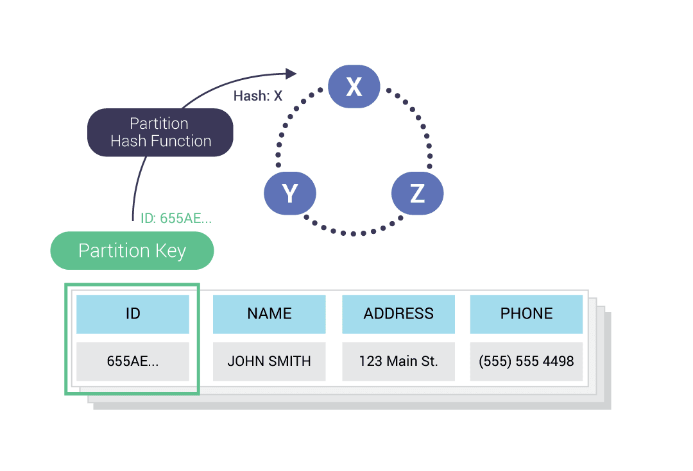
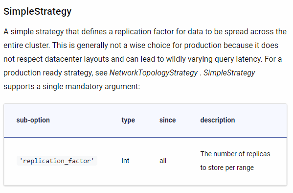
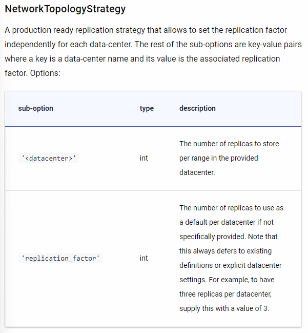

Cassandra
Setup : Docker
docker run --name Node_X -d scylladb/scylla:4.5.0 --overprovisioned 1 --smp 1
docker run --name Node_Y -d scylladb/scylla:4.5.0 \
--seeds="$(docker inspect --format='{{ .NetworkSettings.IPAddress }}' Node_X)" \
--overprovisioned 1 --smp 1
docker run --name Node_Z -d scylladb/scylla:4.5.0 \
--seeds="$(docker inspect --format='{{ .NetworkSettings.IPAddress }}' Node_X)" \
--overprovisioned 1 --smp 1
Scylla runs nodes in a hash ring. All nodes are equal:
- there are no master
- slave
- replica sets.
Replication Factor
The Replication Factor (RF) is equivalent to the number of nodes where data (rows and partitions) are replicated. Data is replicated to multiple (RF=N) nodes. An RF of one means there is only one copy of a row in a cluster, and there is no way to recover the data if the node is compromised or goes down. RF=2 means that there are two copies of a row in a cluster. An RF of at least three is used in most systems
Consistency Level
The Consistency Level (CL) determines how many replicas in a cluster must acknowledge a read or write operation before it is considered successful.
Some of the most common Consistency Levels used are:
ANY– A write must be written to at least one replica in the cluster. A read waits for a response from at least one replica. It provides the highest availability with the lowest consistency.QUORUM– When a majority of the replicas respond, the request is honored. If RF=3, then 2 replicas respond. QUORUM can be calculated using the formula (n/2 +1) where n is the Replication Factor.ONE– If one replica responds; the request is honored.LOCAL_ONE– At least one replica in the local data center responds.LOCAL_QUORUM– A quorum of replicas in the local datacenter responds.EACH_QUORUM– (unsupported for reads) – A quorum of replicas in ALL datacenters must be written to.ALL– A write must be written to all replicas in the cluster, a read waits for a response from all replicas. Provides the lowest availability with the highest consistency.
Sharding in Scylla DB
Each Scylla node consists of several independent shards, which contain their share of the node’s total data. Scylla creates a one shard per core (technically, one shard per hyperthread, meaning some physical cores may have two or more virtual cores). Each shard operates on a shared-nothing architecture basis. This means each shard is assigned its RAM and its storage, manages its schedulers for the CPU and I/O, performs its compaction (more about compaction later on), and maintains its multi-queue network connection. Each shard runs as a single thread, and communicates asynchronously with its peers, without locking.
Other Important Concepts
Partition Key
A Partition Key is one or more columns that are responsible for data distribution across the nodes. It determines in which nodes to store a given row. As we will see later on, typically, data is replicated, and copies are stored on multiple nodes. This means that even if one node goes down, the data will still be available. It ensures reliability and fault tolerance
Node
A Node is a unit of storage in Scylla. It is comprised of the Scylla database server software running on a computer server — a physical machine — and all its subsystems (CPUs, memory, storage, network interfaces and so on), or, in a visualized environment, a subset of a server’s resources assigned to a container.
Cluster
A minimum Cluster typically consists of at least 3 nodes. Data is replicated across the cluster, depending on the Replication Factor
Table
A Table is how Scylla stores data and can be thought of as a set of rows and columns.
Keyspace
A Keyspace is a collection of tables with attributes that define how data is replicated on nodes. It defines several options that apply to all the tables it contains, most prominently of which is the replication strategy used by the Keyspace.
CQL
A query language for interacting with the Scylla (or Cassandra) database.
Partition Key
One or more columns that are responsible for data distribution across the nodes. It determines in which nodes to store a given row

CQL Shell
A command-line interface for interacting with Scylla through the Cassandra Query Language (CQL)
Replication
The process of replicating data across Nodes in a Cluster.
Consistency Level
A configurable setting which dictates how many replicas in a Cluster must acknowledge read or write operations.
Tunable Consistency
The possibility for unique, per-query, Consistency Level settings. These are incremental and override fixed database settings intended to enforce data consistency.
Replication Factor
The total number of replica Nodes across a given Cluster. A Replication Factor of 1 means that the data will only exist on a single Node in the Cluster and this setup will not have any fault tolerance.
CAP Theorem
The CAP Theorem is a concept that states that a distributed database system can only have 2 of the 3: Consistency, Availability, and Partition Tolerance.
Token Ranges
Each node in a ring is assigned a range. The hash function computes a token for a given partition key. The hash function determines the placement of the data in the cluster.
Without using Vnodes or virtual nodes, each node could only support one token range. By using vnodes, each node can support multiple, non-contiguous token ranges. By doing this, we can think of each physical node as hosting many virtual nodes. By default, each node has 256 virtual nodes.
Gossips
For nodes to exchange information with each other. Gossip is decentralized, and there is no single point of failure. It’s used for peer node discovery and metadata propagation. Gossip communication occurs periodically.
Replication Strategy
Simple Strategy – Places the first replica on the node selected by the partitioner. Remaining replicas are placed in the clockwise direction on the node ring. This replication strategy should not be used in production environments.
Network Topology Strategy – Places replicas in a clockwise direction in the ring until it reaches the first node of a different rack. This is used for clusters deployed across multiple data centers. Using this strategy allows you to define the number of replicas for each DC
Cluster Level Read/Write Interaction
So what happens when data is read or written at the cluster level? Note that what happens at the node level will be explained in another lesson.
Since each node is equal in Scylla, any node can receive a read/write request. These are the main steps in the process:

- A client connects to a Scylla node using CQL shell and performs a CQL request
- The node the client connected to is now designated as the Coordinator Node. The Coordinator Node, based on hashing the data, using the partition key and on the Replication Strategy, sends the request to the applicable nodes. Inter-node messages are sent through a messaging queue in an asynchronous way.
- The Consistency Level determines the number of nodes the coordinator needs to hear back from, in order for the request to be successful.
- The client is notified if the request was successful.
Core Principles of Cassandra
The database is designed around several core principles:
- High Scalability – the system must scale both horizontally (adding more nodes) as well as vertically (make optimal use of modern multi-core, multi-CPU node architectures, and high-capacity storage devices).
- High Availability – the system should have low latency and remain highly accessible for operations even if one or more nodes are in a failure state, or if there is a network failure.
- High performance – the system should run as close to the hardware as possible to deliver low and consistent latency as well as very high throughput.
- Low Maintenance – the system should include ease-of-use features, such as autonomous capabilities and automated facilities, for example, the ability to intelligently configure itself and tune its performance.
Replication Strategy
- SimpleStrategy

- NetworkTopologyStrategy
